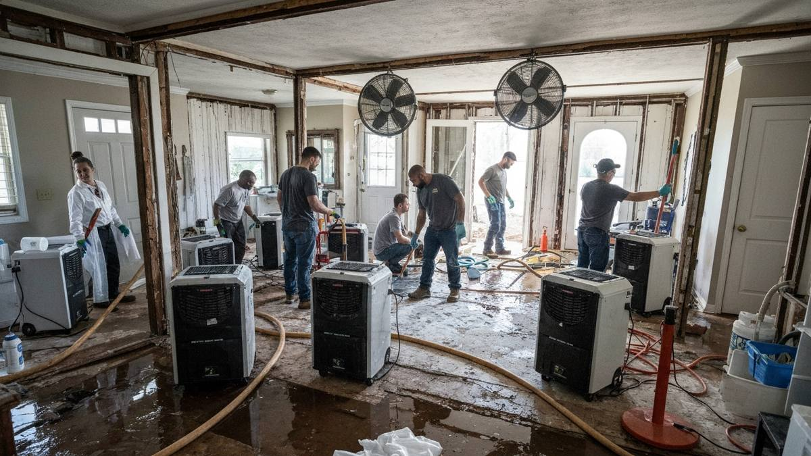

Sand Springs is a community of approximately 19,000 residents located just west of Tulsa along the Arkansas River. The city's proximity to Keystone Dam creates a unique flood risk profile that few other Tulsa-area suburbs share. When heavy rains force controlled releases from the dam, river levels can rise rapidly, threatening homes and businesses in low-lying areas including the Shell Creek neighborhood. Beyond river flooding, Sand Springs properties near Case Community Park and throughout the city's older residential streets face water damage from aging plumbing, storm runoff, and severe weather. Tulsa Water Damage Pros provides Sand Springs with fast, certified water damage restoration services available 24 hours a day, every day of the year.

Our Water Damage Restoration Process
- Immediate Emergency Response — Call (918) 723-2096 any time. We dispatch a certified restoration crew to your Sand Springs property right away, typically arriving within 45 to 60 minutes via Highway 97 or Highway 412.
- Full Property Inspection — Our technicians use infrared imaging and professional moisture detection equipment to map the complete extent of water damage, including hidden moisture behind walls and under flooring throughout your Sand Springs home.
- High-Volume Water Extraction — We deploy truck-mounted extraction systems and submersible pumps designed for heavy flooding, critical for Sand Springs properties affected by river surges or major storm events.
- Industrial Drying & Dehumidification — Strategically placed air movers and commercial dehumidifiers remove all residual moisture from structural materials. We monitor moisture levels daily until your property reaches verified dry conditions.
- Sanitization & Complete Restoration — Floodwater often carries contaminants. We treat all affected surfaces with EPA-registered antimicrobial solutions, remove unsalvageable materials, and rebuild damaged areas to restore your home fully.
Why Sand Springs Homeowners Trust Tulsa Water Damage Pros
- Flood Restoration Specialists — Sand Springs faces elevated flood risk from Keystone Dam releases and the Arkansas River. Our team has extensive experience restoring properties in flood-prone areas and understands the unique contamination and structural concerns river flooding presents.
- IICRC-Certified Professionals — Every technician is certified by the Institute of Inspection, Cleaning and Restoration Certification, ensuring your restoration meets the highest industry standards.
- Contaminated Water Expertise — Floodwater from the Arkansas River is classified as Category 3 (black water), requiring specialized extraction, sanitization, and disposal protocols. We handle it safely and thoroughly.
- Insurance Documentation & Support — We produce comprehensive damage reports with photos, moisture readings, and itemized costs, then coordinate with your insurance company to help maximize your claim approval.

Frequently Asked Questions — Water Damage Restoration in Sand Springs
Does the Keystone Dam affect flood risk in Sand Springs?
Yes. Sand Springs sits downstream from Keystone Dam on the Arkansas River. During periods of heavy rainfall, controlled water releases from the dam can raise river levels significantly, increasing flood risk for Sand Springs properties along the river corridor and in low-lying areas like Shell Creek. Our team is experienced with flood restoration in these high-risk zones and can respond immediately when water levels rise.
How quickly can you respond to water emergencies in Sand Springs?
We can typically reach Sand Springs properties within 45 to 60 minutes. Our crews travel west from Tulsa via Highway 97 and Highway 412, providing fast access to all Sand Springs neighborhoods including the Shell Creek area, properties near Case Community Park, and homes throughout the city's residential corridors.
What should I do if my Sand Springs home floods from the Arkansas River?
First, ensure your family's safety and evacuate if water levels are rising. Do not enter standing floodwater, as it may contain sewage and hazardous debris. Once it is safe, call us at (918) 723-2096 immediately. Our crews will extract all standing water, sanitize affected areas with antimicrobial treatments, and perform complete structural drying to prevent mold growth. We also document everything for your flood insurance claim.
Need Water Damage Restoration in Sand Springs? Call Now
We're your local water damage restoration experts serving Sand Springs and all surrounding areas.
📞 Call (918) 723-2096